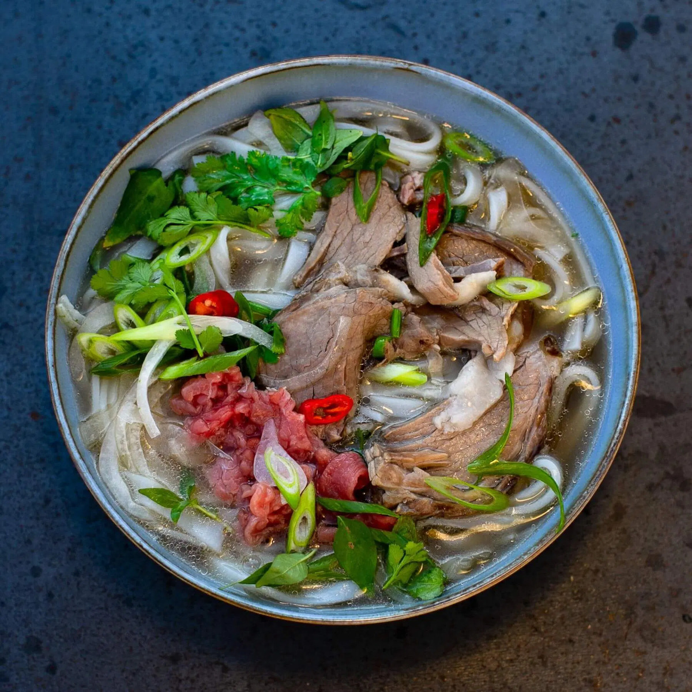

Pho Bo

Ingredients:
- 500g beef bones
- 500g beef brisket, thinly sliced
- 200g rice noodles
- 1 onion, charred
- 3-inch piece of ginger, charred
- 3 star anise
- 3 cloves
- 1 cinnamon stick
- 1 tablespoon fish sauce
- 1 tablespoon sugar
- Fresh herbs, bean sprouts, lime wedges, and sliced chili for serving
Steps:
- Char the onion and ginger over an open flame or in the oven until slightly blackened.
- In a large pot, bring beef bones and water to a boil. Drain and rinse the bones, then refill the pot with clean water.
- Add the charred onion, ginger, star anise, cloves, and cinnamon stick to the pot. Simmer for 1-2 hours, skimming any impurities that rise to the surface.
- Strain the broth and return it to the pot. Season with fish sauce and sugar.
- Boil the rice noodles according to package instructions, then drain and set aside.
- Arrange the sliced beef brisket on a plate.
- In each serving bowl, place a portion of cooked rice noodles and raw beef slices.
- Ladle the hot broth over the beef to partially cook it.
- Serve the Phở Bò with fresh herbs, bean sprouts, lime wedges, and sliced chili on the side.
Back To Main